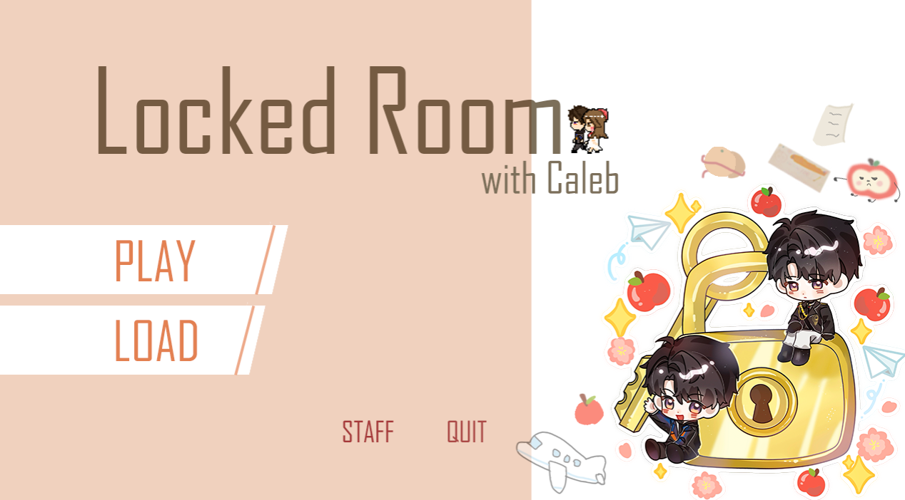
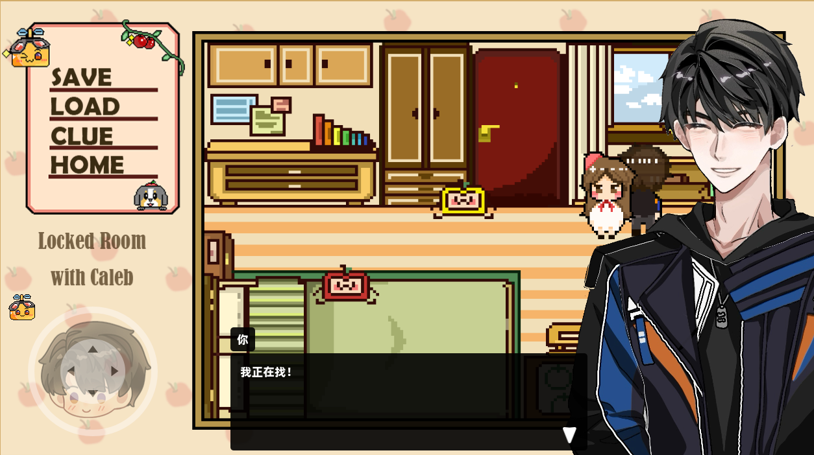
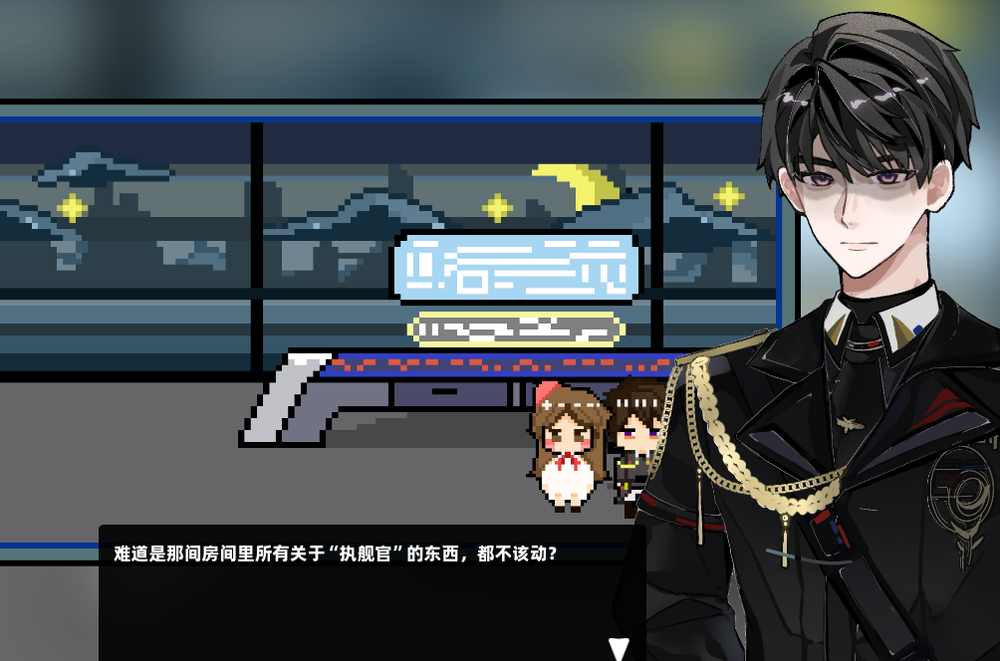
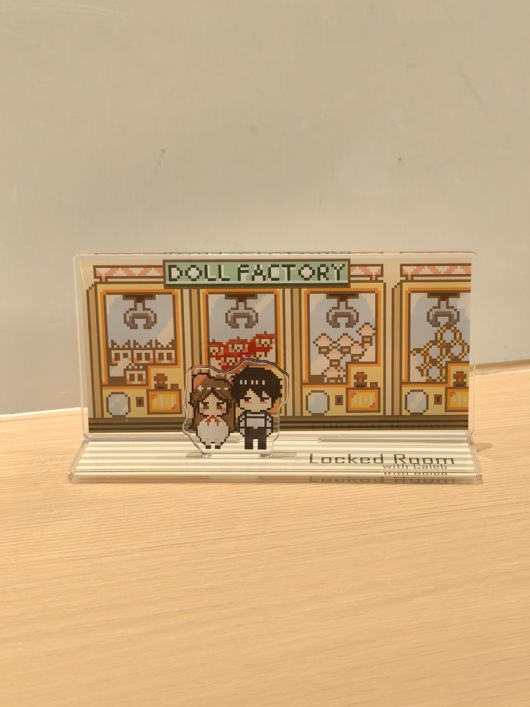
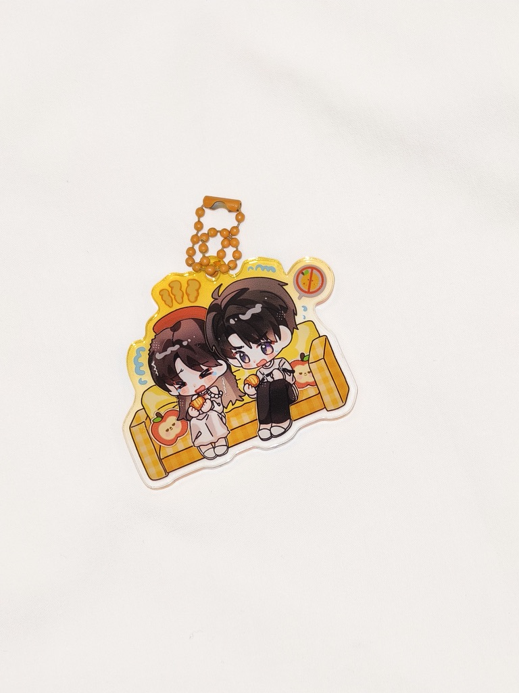
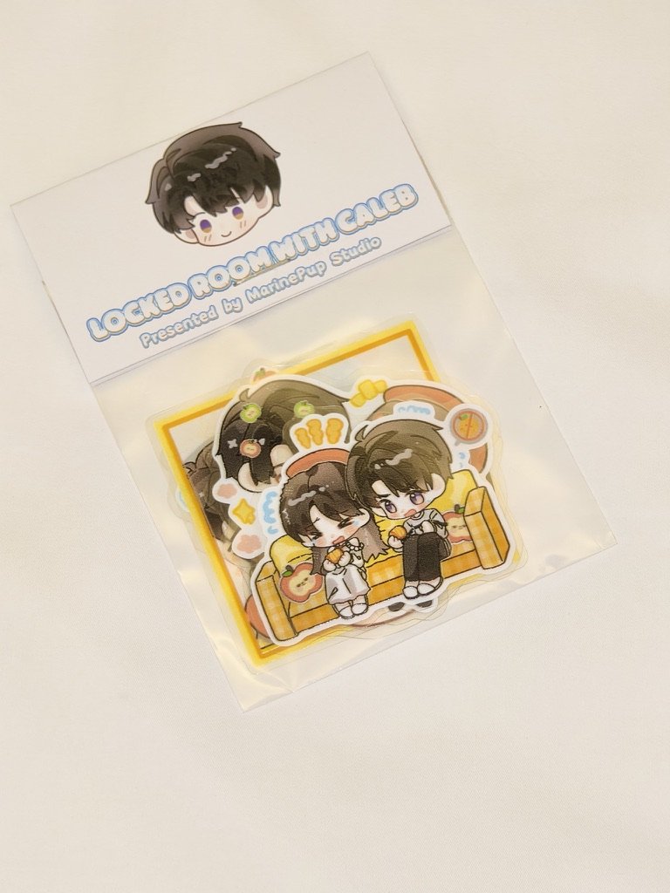
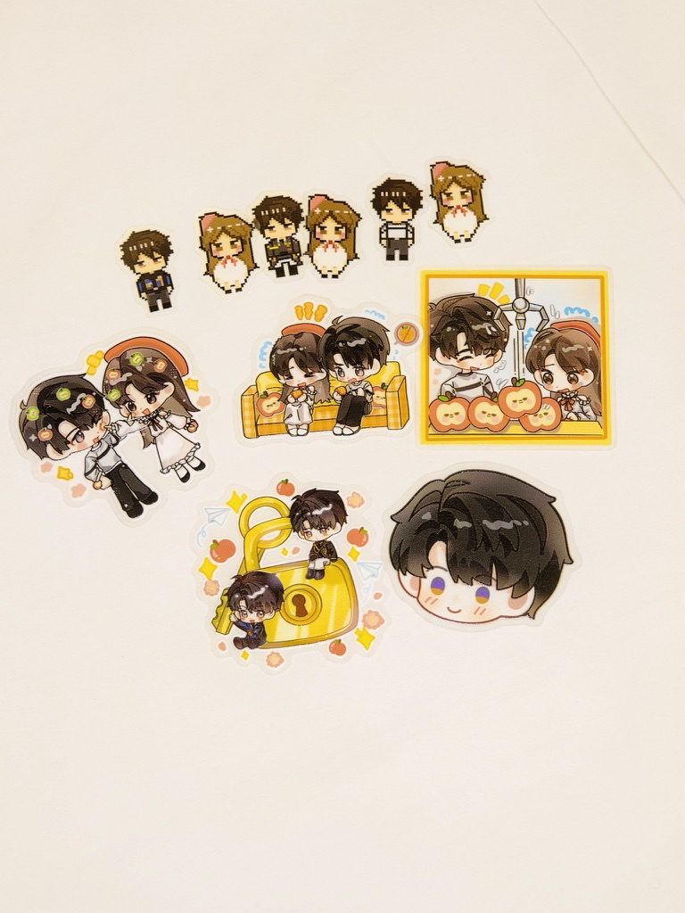
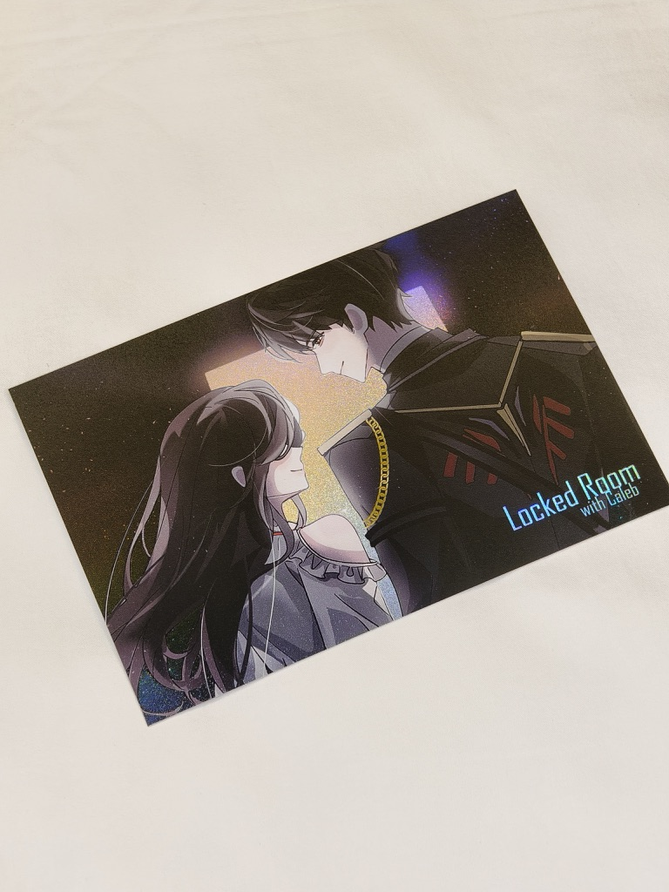

MARINEPUP STUDIO / GAME PROJECT
Locked Room with Caleb
一款像素解谜同人游戏。简而言之，这是一个找不到线索就无法出去的房间。但是当你找齐了所有线索，你还会选择出去吗？
前往 itch.io 游戏页面 观看游戏 PV


关于这个项目
与Marineball@白晏迟合作成立了MarinePup Studio，是我作为独立游戏制作人的开始。
还记得决定做这个项目的那一天，是我第一次去她家里做客，吃的是隆德少有的好吃的中国菜。在那一天之前，她给我看了她自己做的视觉小说，我非常喜欢里面的文笔与情感，在吃饭的时候就告诉了她。
后来，两个人像龙场悟道一般，拍板决定要做这么一个游戏！而且幸运的是，这个游戏并不是一切的终点......





我们还做了关于游戏的周边，看着这些小物，仿佛宣发的那几天像梦一般。我们非常忐忑、期待着大家对游戏的评价（但是好像最后结算并没有发财......就卖了几个子儿，感觉自己也是白日梦想家了。）
在未来，MarinePup Studio和她们的游戏一定还会再出现的（认真）。
我还用这个游戏素材做了配套的桌宠，除了陪伴以外我创新地加入了简单的占卜功能，解决选择困难症功能，番茄钟功能......感觉用处比那些只会在桌面上繁殖的桌宠大了很多kk
在 itch.io 下载我的桌宠夏天终于成为了我生命中不可剥离的一部分。